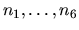

| Dividing up |
Marsha and Bill own a collection of marbles. They want to split the collection among themselves so that both receive an equal share of the marbles. This would be easy if all the marbles had the same value, because then they could just split the collection in half. But unfortunately, some of the marbles are larger, or more beautiful than others. So, Marsha and Bill start by assigning a value, a natural number between one and six, to each marble. Now they want to divide the marbles so that each of them gets the same total value.
Unfortunately, they realize that it might be impossible to divide the marbles in this way (even if the total value of all marbles is even). For example, if there are one marble of value 1, one of value 3 and two of value 4, then they cannot be split into sets of equal value. So, they ask you to write a program that checks whether there is a fair partition of the marbles.
Each line in the input file describes one collection of marbles to be divided. The lines consist of six non-negative integers , where ni is the number of marbles of value i. So, the example from above would be described by the input-line ``1 0 1 2 0 0''. The maximum total number of marbles will be 20000.
The last line of the input file will be ``0 0 0 0 0 0''; do not process this line.
For each colletcion, output ``Collection #k:'', where k is the number of the test case, and then either ``Can be divided.'' or ``Can't be divided.''.
Output a blank line after each test case.
1 0 1 2 0 0 1 0 0 0 1 1 0 0 0 0 0 0
Collection #1: Can't be divided. Collection #2: Can be divided.